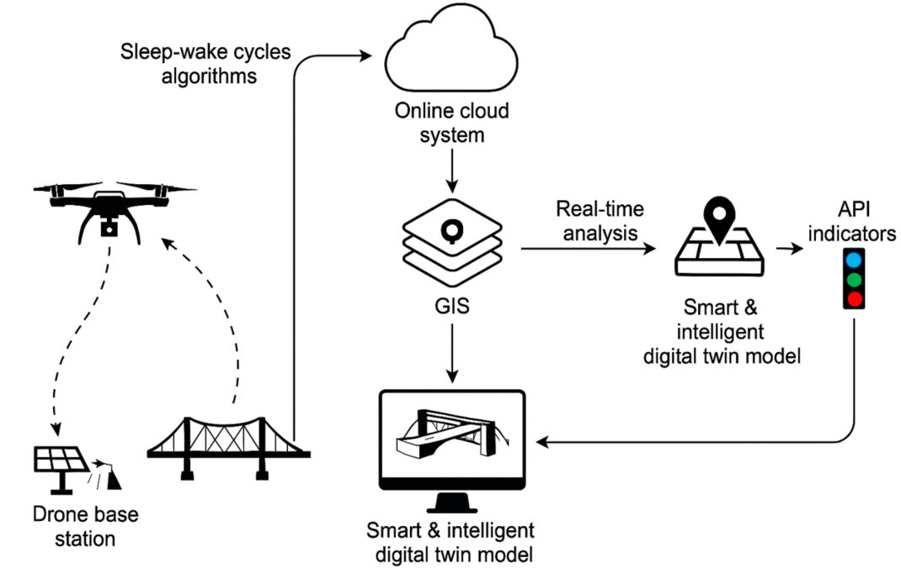
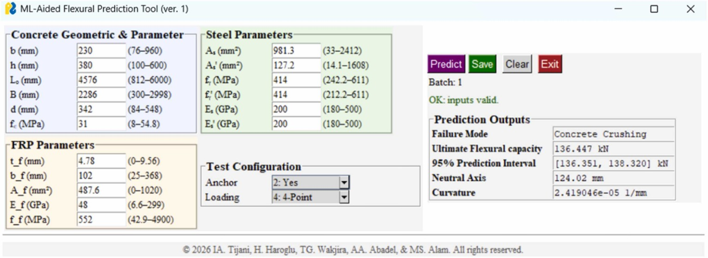
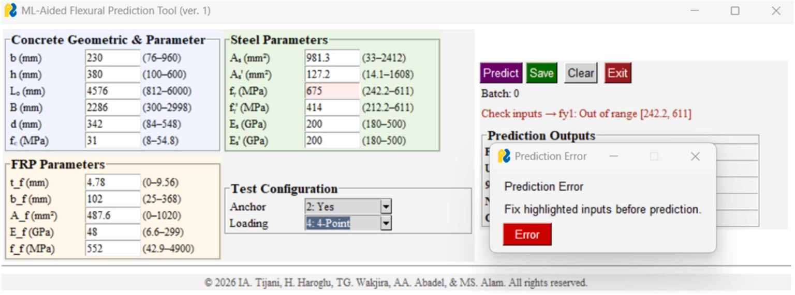

01
Structural Engineering & Mechanics
Understanding how structures behave, fail, adapt, and recover.
FRP strengthening · confinement · reinforced concrete · rehabilitation · structural mechanicsFrom bridges and buildings to advanced materials and smart cities, we integrate artificial intelligence with civil and structural engineering to create safer, smarter, sustainable, and more resilient built environments.
HIBNAF Lab — Hybrid Intelligence for Built & Networked Advanced Infrastructure is a research initiative advancing the convergence of civil and structural engineering, artificial intelligence, advanced construction materials, and infrastructure technologies.
We combine engineering mechanics, experimental research, scientific machine learning, explainable artificial intelligence, sensing, materials informatics, and computational modelling to understand, design, monitor, rehabilitate, and manage next-generation infrastructure.
Our goal is to translate fundamental engineering knowledge and emerging digital technologies into practical solutions for safer, more sustainable, intelligent, and resilient built environments.
Engineering intelligence across materials, structures, and infrastructure systems.
Understanding how structures behave, fail, adapt, and recover.
FRP strengthening · confinement · reinforced concrete · rehabilitation · structural mechanicsEmbedding engineering knowledge into transparent, data-driven models.
Machine learning · explainable AI · generative AI · surrogate modelling · optimizationEngineering smarter materials for high-performance and low-carbon infrastructure.
UHPC · FRP composites · green concrete · materials informatics · durabilityGiving infrastructure the intelligence to reveal its condition and performance.
NDT · digital image correlation · computer vision · sensors · damage detectionConnecting assets, sensing systems, and infrastructure networks.
Bridges · buildings · pipelines · water networks · smart cities · IoTTranslating research models into practical technologies for engineering decisions.
Digital twins · engineering software · automation · decision support · sensing platformsOur research explores digital image correlation (DIC), structural health monitoring, drone-assisted bridge inspection, cloud-enabled sensing, geographic information systems (GIS), and intelligent digital twins for resilient infrastructure.

Data-augmented and explainable machine-learning frameworks for predicting structural capacity and failure modes while translating predictions into engineering decision-support tools.
Combining synthetic-data generation, machine learning, and structural knowledge to predict the behaviour of FRP-confined ultra-high-performance concrete and other advanced materials.
Combining sensing, computer vision, machine learning, and nondestructive evaluation to understand the condition and performance of bridges and networked infrastructure.
Mitacs Accelerate, Canada
Innovation and Technology Fund, Hong Kong SAR
Research grant funded, Hong Kong SAR
HIBNAF seeks to transform advanced computational research into transparent, accessible, and application-oriented tools for researchers, engineers, infrastructure owners, and decision-makers.
Interpretable and transparent prediction for engineering decisions.
New strategies for data-scarce structural and materials problems.
Intelligent computational representations linked to physical infrastructure.
Actionable structural information from images and sensor data.
Turning predictive models into usable engineering technology.
Combining domain expertise, physics, data, and artificial intelligence.
A research graphical user interface for data-augmented machine-learning predictions of FRP-strengthened reinforced-concrete beam response.


The desktop application accepts concrete geometry, reinforcement and FRP properties, and test configuration. Its interface illustrates predicted failure mode and ultimate flexural capacity, with additional outputs including a prediction interval, neutral-axis depth, and curvature.
Built-in range checks help identify unsupported input values before predictions are generated. Screenshots show illustrative research examples, not independent design verification.
Related publication: “Data-augmented explainable machine learning framework and user-centric tool for classifying failure modes and predicting flexural capacity of FRP-strengthened RC beams.” Structures (2026). DOI: 10.1016/j.istruc.2026.111776
Recent work across structural engineering, machine learning, advanced materials, and infrastructure monitoring.
Civil & Structural Engineering · Artificial Intelligence · Advanced Materials · Smart Infrastructure
Dr. Ibrahim Tijani is a civil and structural engineering researcher and registered Professional Engineer whose work integrates structural mechanics, advanced construction materials, scientific machine learning, explainable artificial intelligence, and smart infrastructure.
He currently serves as a Research Coordinator in the School of Engineering at the University of British Columbia, Canada.
PhD, Civil Engineering
City University of Hong Kong
Specialization: Structural Engineering
MSc, Civil Engineering
King Saud University
BTech, Civil Engineering
Ladoke Akintola University of Technology
Professional Engineer (P.Eng.)
Project Management Professional (PMP)
To advance safer, smarter, sustainable, and resilient infrastructure by integrating fundamental engineering knowledge with artificial intelligence, advanced materials, sensing, and emerging digital technologies.
To become an internationally recognized interdisciplinary research platform at the frontier of structural engineering and intelligent infrastructure, where engineering science and human expertise converge with artificial intelligence.
HIBNAF welcomes collaborations with students, researchers, universities, industry partners, government agencies, and infrastructure stakeholders interested in transforming civil and structural engineering through intelligent technologies.
Research opportunities across structures, AI, materials, and smart infrastructure.
Interdisciplinary collaborations, joint studies, and publications.
Applied research and intelligent solutions for real infrastructure challenges.
Collaborative proposals, research networks, and strategic partnerships.